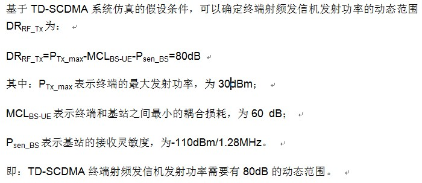

接收机动态范围是指接收机在接受信道客服干扰信号电平增加的能力。在同一接收信道存在AWGN干扰信号条件下，对指定的有用信号电平，接收机应该满足规定的BER要求最低要求：在下表指定的参数条件下测得的BER不能超过0.001（0.1%）
参数 值 参考测量信道数据速率 12.2kbit/s 有用信号平均功率 -80dBm AWGN干扰信号 -76dBm/1.28MHz
TD-SCDMA系统是一个CDMA系统，也就是一个自干扰系统。在基站端为了防止部分移动台因为信号电平太高而使其它移动台发送的信号不能被正确地接收，希望每个移动台发送的信号功率电平在到达基站时是相当的，即克服"远近效应"的影响。同时，考虑到小区覆盖范围的要求， TD-SCDMA终端射频发信机的发射功率应该具有一定的动态范围（DRRF_Tx）。
